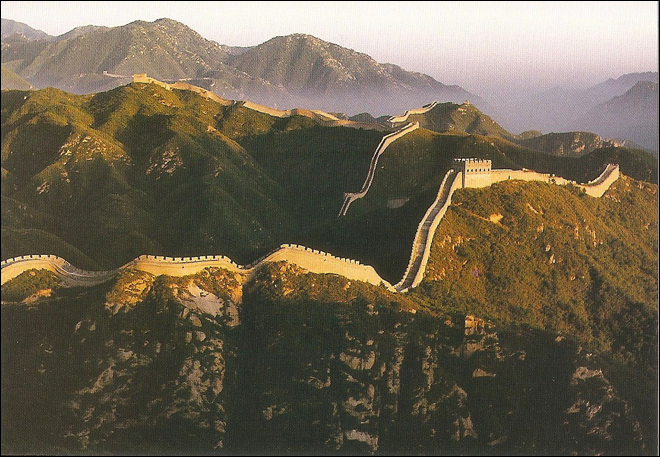
.
The Great Wall of China is the collective name of a series of fortification systems generally built across the historical northern borders of China to protect and consolidate territories of Chinese states and empires against various nomadic groups of the steppe.
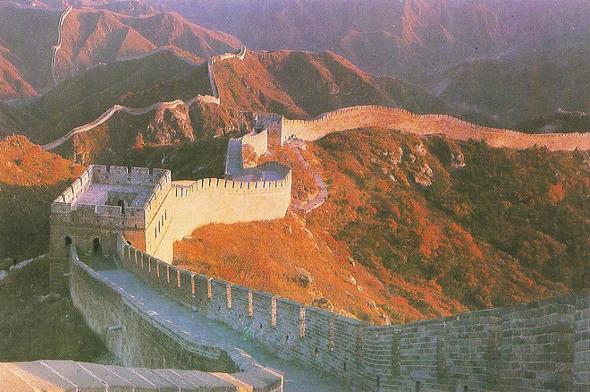
Some desultory guards dressed in old-time costume tried to add some old-time flavour but failed dismally. And we saw the first of several "police admonishment" notices.
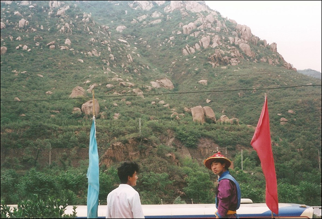
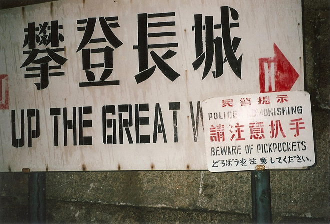
Several walls were being built from as early as the 7th century BC by ancient Chinese states; selective stretches were later joined together by Qin Shi Huang (220–206 BC), the first Emperor of China. Little of the Qin wall remains.
The most currently well-known of the walls were built by the Ming dynasty (1368–1644).
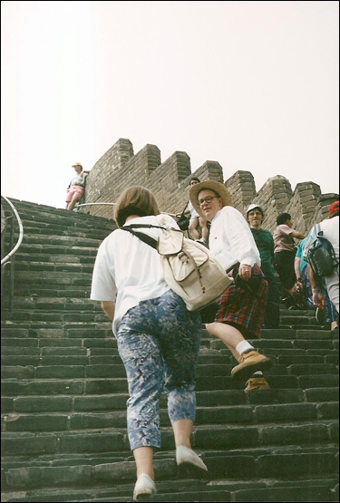
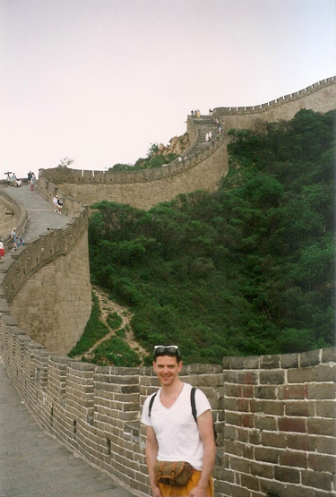
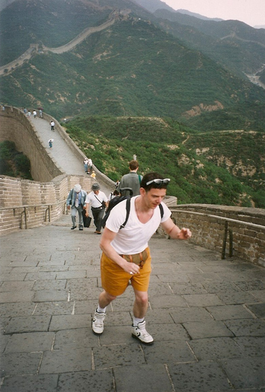
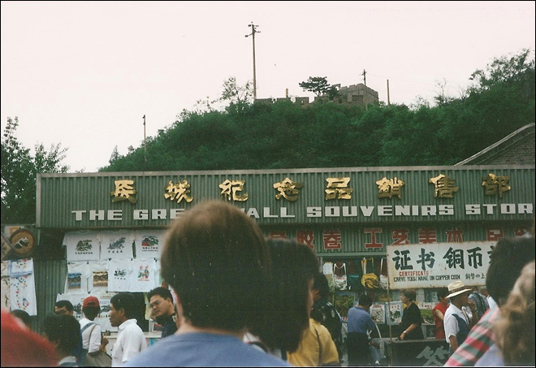
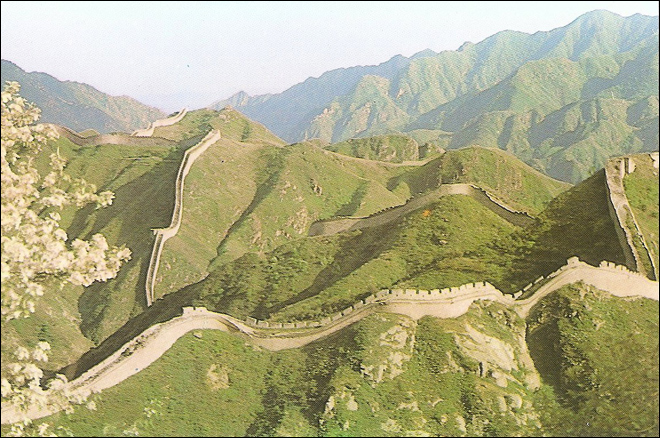
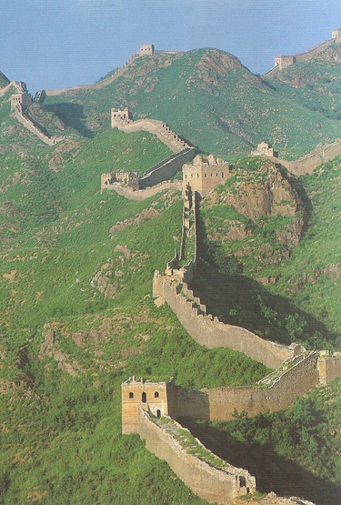
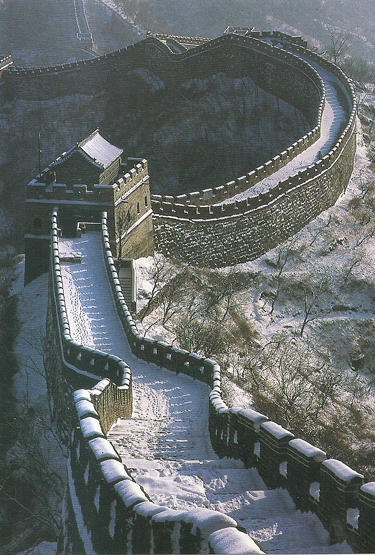
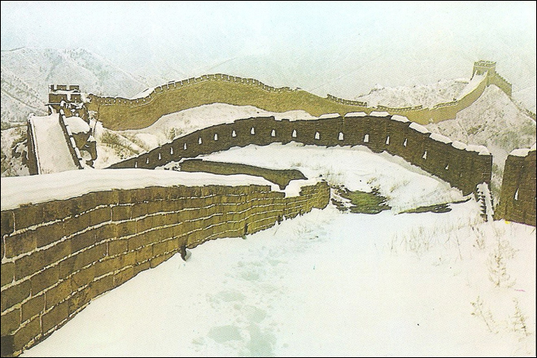
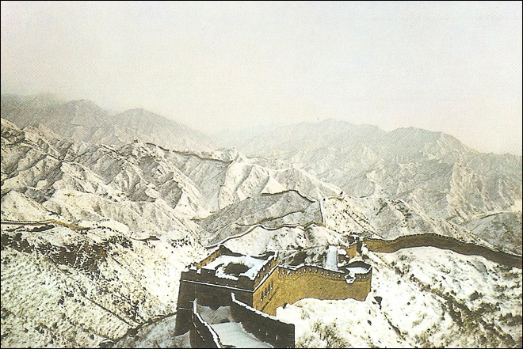